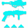

乘胜追击
击破 战斗人员护盾 ：
+20 稳定性，
+20 操控性，
+20 填装速度， 持续 10 秒。
刀剑获得 +20 防御抗性。
✦ 神器模组 · 凯旋纪念碑 ✦
来自过去赛季的神器可装备， 每件专注于特定元素 、 武器 类型和独特机制。
击破 战斗人员护盾 ：
+20 稳定性，
+20 操控性，
+20 填装速度， 持续 10 秒。
刀剑获得 +20 防御抗性。
击杀 电弧减益敌人 ：
获得 x1 电光充能。
在 6 秒内连续击杀 3 名 电弧减益敌人 ：
生成一个 能量球， 提供 7.15% 超能能量。
恢复 40 点生命值。
使用 电弧武器 击杀 6 [2？] 名敌人 ：
生成一个 电弧元素能量球。
电弧元素能量球 ：
电弧元素能量球 在地面停留最多 20 秒后消失。
拾取的电弧能量球 可持有最多 20 秒。
电弧能量球 造成最多 405 [101] 伤害， 最低降至 90% 伤害， 并在 8 米范围内施加 震颤 效果。
造成 动能武器伤害 和完成 动能武器击杀 会推进计数器， 达到 100% 时生成一个独特的 动能弹药盒。
计数器持续 15 秒， 并在造成 动能武器伤害 时刷新。
每点伤害提供 0.0265% 进度， 需要造成 3770 点伤害才能 生成一个弹药盒。
A499 提供的进度减少 75%（ 需要 15000 点伤害才能生成一个弹药盒 ）。
红血击杀 = 8% | 精英 = 15% | 小头目 = 25%
伤害需求 忽略光等差距， 但考虑实际伤害系数。
这意味着无论因 光等差距 造成的伤害降低幅度， 它都需要相同的 “ 基础伤害 ”。
收集一个 动能弹药盒 时 ：
+5% 特殊弹药 和 +5% 威能 弹药进度。
装填当前装备的 动能武器 并为它们生成 特殊 / 威能弹药。
生成 （ 弹匣容量的 1/3）+ 1 发弹药， 某些例外情况除外。
计入弹药拾取效果。 动能弹药生成 不受回收器影响。
堡垒 = +1 弹药 | 库尔之影 = +2 弹药 | 英勇利刃 = +2 弹药 | 缩影 = +12 弹药.
击破一个 战斗人员护盾 时 ：
10% [2.5%] 伤害抗性 ( 抵抗x1) 持续 6 秒。
近战伤害提高 100% 持续 6 秒。
也会提高超能近战伤害。
对 精英 + 战斗人员 造成足够的 动能武器伤害次数 时 ：
生成一个 动能裂口， 持续？ 秒。
动能决裂 可以被伤害， 在被造成伤害？ 秒后 激活。
动能裂口 的爆炸伤害等于其受到的伤害的 %%%, 可眩晕势不可挡勇士， 并且 会击退战斗人员。
使用弓或狙击步枪造成 精准命中 时 ：
获得一层 远距填装， 持续？ 秒， 最多？ 层。
远距填装 :
x1 | +？ 装填速度
x2 | +？ 装填速度
x3 | +？ 装填速度
每当一个 勇士 被 眩晕 时 ：
为 充能最少的技能 提供 25% 技能能量。
显然， 不包括超能技能。
狙击步枪命中 :
获得 1 层 狙击手冥想， 持续 7 秒。
威能 狙击步枪 命中获得 2 层数。
狙击手冥想 Buff 在收起武器后仍然持续。
狙击手冥想
增加伤害 、 稳定性和填装速度。
2.8% | 5.7% | 9% | 12% | 15% 伤害
+? | +? | +? | +? | +? 稳定性
+15 | +30 | +35 | +40 | +45 填装速度
在使用 刀剑 进行 格挡 后 ：
获得 势不可挡射击， 持续 3 秒。
这在所有情况下都不起任何作用哈哈哈哈哈哈哈哈哈哈。
攻击后， 等待 0.5 秒 再次攻击 ：
获得 银白利刃， 持续 5 秒。
该 Buff 无法刷新。
银白利刃 :
15% 增加 刀剑 伤害
+100 充能效率
在进行 3 次 轻攻击 后， 再进行一次 重攻击 ：
获得 刀剑风暴连击， 持续 5 秒。
额外的 刀剑 击杀会刷新该 Buff。
刀剑风暴连击 :
自动对使用者周围 6 米内的敌人每 0.53 秒造成 103 [?] 刀剑动能 并 迷惑， 持续 3 秒。
在距离 <4 米时， 伤害最多提高 15%。
在 4 秒内连续击杀 3 名被削弱的敌人 ：
获得 吞食， 持续 5 +2.5 秒。
本应造成 削弱 的命中， 即使立即击杀敌人， 也会被计入计数。
当拥有 虚空元素增益 ( 吞食 、 隐身 或 覆盖护盾 ) 时 ：
近战 和 刀剑 命中造成 削弱， 持续 6 秒。
在命中时检测， 而非在使用时快照。
当拥有 虚空元素增益 时， 通过 近战 或 刀剑 击杀 ：
触发一次 削弱爆发， 对 4 米内的敌人造成 削弱， 持续 6 秒。
击杀一个 被削弱的敌人 后 ：
生成一个 追踪弹头， 寻找 15 米内的敌人。
弹头 造成 87 [?] 虚空 并在? 米范围内造成 削弱。
使用 终结技 :
25% 手雷 和 近战 技能能量。
在 击杀 被震颤的敌人 时 :
对 8 米内的敌人造成 致盲 效果， 持续 10 秒。
在造成 电弧近战伤害 时 :
施加 震颤， 并每 0.25 秒造成 23 点电弧 持续伤害
在 8.75 秒内总计造成约 ~800 点电弧。
不包括震颤伤害！ 有震颤时， 总伤害为 1245 点。
在 3 秒内获得 3 次机枪击杀 时 :
恢复 15 点生命值。
开始临界生命值再生。
精准击杀 提供 精准平等 的 层数， 最高 10 层。
普通敌人 = 1 | 精英 = 2 | 小头目 = 5 | 勇士 + = 10
不会溢出或保留超过 x10 的层数。
达到 x10 层数 时 :
消耗所有层数 以生成一个 大型能量球。
能量球 提供 12.5% 超能能量。
在拾取 大型能量球 时 :
武器激涌 x2 持续 11 秒。
不会覆盖更强的武器激涌效果。
适用于所有伤害类型。
电弧粘性电浆手雷 、 融合手雷 和 磁性手雷 的直接命中伤害提高。
电弧粘性电浆手雷 = 60% | 融合 = 30% | 磁性手雷 = 总计提升 22.5%
只有第一次 磁性手雷 获得 45% 的加成。
不会增加融合手雷的烈日效果伤害。
使用上述 手雷 击杀敌人时 :
在 敌人死亡位置 上方生成 4 枚追踪 动能 微型导弹。
微型导弹 追踪 30 米内最近的敌人。
微型导弹 在命中时造成 216 [?] 动能。
它们的行为与辅助炸药的导弹完全相同。
在 3 秒内对同一目标造成 多次精准命中 时 ：
烈日武器 ： 获得 焕光 持续 10 +5 秒。
冰影武器 ： 获得一层 冰霜护甲。
触发后有 1.5 秒冷却时间。
冷却期间额外命中不计。
精准命中触发 ：
( 弹匣容量的 25%) + 1， 向下取整, 弓箭为三次精准
使用 缚丝 摧毁 缠结 时 ：
爆炸 额外造成一次 伤害， 造成 288 [?] 伤害， 在 17 米半径内伤害衰减至 75%。
额外伤害计为缠结伤害， 用于所有互动。
在 焕光 状态下， 造成相当于敌人 生命值 + 护盾 10% 的武器伤害时， 或使用武器击杀 灼烧状态战斗人员 时 ：
目标释放 1 枚烈日弹片， 造成 54 [?] 伤害 和最多 289 [20] 爆炸伤害， 在? 米范围内施加 x20+0 灼烧。
弹片生成有 1 秒冷却时间。
弹片有轻微追踪效果， 但经常会错过其生成时瞄准的敌人
向 盟友 施加 元素增益 时 ：
获得 约 15%? 职业技能能量。
每个盟友激活后有? 秒冷却时间。
对 非首领战斗人员 施加 暗影减益 时 ：
造成的烈日提高 75%。
表现为烈日出现黄色数字。
与其他削弱来源层数叠加。
额外施加暗影减益以触发灼烧暗影减益有 2? 秒冷却时间。
当 冰霜护甲 、 虚空覆盖护盾 或 织造铠甲 激活时 ：
?% [?%] 额外基础近战充能速率
50% [5%] 提升充能近战伤害。
同时提升超能近战伤害。
当 增幅 或 焕光 激活时 ：
?% [?%] 额外基础手雷充能速率
25% [5%] 提升手雷伤害。
抓钩近战改为获得 12% 增伤， 每半段 特性各提供一半加成。
当 因战斗人员伤害导致护盾破裂， 且 冰霜护甲 激活时 ：
在 10 米范围内释放 冰影爆发。
冰影爆发 冻结 敌人， 并为使用者及 射程内的盟友 提供一层 冰霜护甲。
当使用 元素武器 眩晕勇士 时 ：
触发一次 元素匹配爆炸， 造成最多 315 点元素伤害， 并在 5 米范围内 （ 伤害递减至 0%） 施加 元素减益。
电弧 ： 震颤 | 烈日 ： 点燃 | 虚空 ： 不稳定
冰影 ： 冻结 | 缚丝 ： 割裂
对动能武器无效。
拾取 元素拾取物 时 ：
22% [?%] 匹配拾取物类型的武器伤害 提升， 持续 7 秒。
显示为武器激涌， 但与其叠加方式为乘法。
对 被瓦解的敌人 造成相当于其 生命值 + 护盾 总和 10% [100? 生命值 ] 的武器伤害时， 生成一个 线虫。
生成线虫有 0.5 秒冷却时间。
线虫 造成伤害时施加 割裂 效果。
在 2 名盟友 15 米范围内造成持续 精准伤害 时 ：
25% 伤害抗性 （ 抗性x2）， 持续 10 秒？
击杀 受到缚丝减益的战斗人员 时 ：
触发一次 悬停爆破。
仅在生成缠结时触发。
拾取一个 超能匹配的 元素拾取物 时 ：
为充能最少的技能提供 25% 技能能量。
缠结 也会触发。
触发之间间隔 0.3 秒冷却时间。
不会对至少拥有 1 层充能的技能触发。
随机击杀一定数量敌人后， 基于 元素拾取物种类 ：
生成一个 超能元素 元素拾取物。
触发所需的击杀数因 元素拾取物 而异。
焰灵， 虚空裂口 ：4–7 次击杀。
离子轨迹， 冰影碎片， 缠结 ：9–11 次击杀。
触发 焰灵， 虚空裂口 和 缠结 的 全局冷却。
冷却期间获得的击杀不计入下一次拾取物。
伤害类型与超能元素相匹配无额外加成效果。
在 冰霜护甲 激活时， 使用 冰影武器 造成 精确击杀 ：
在敌人死亡位置触发一次 冰冻爆发。
冰冻爆发 影响 7 米内的敌人。
造成 线虫伤害 会获得一层 集群战术， 持续 10 秒， 最多可叠加至 2 层数。
造成 额外的线虫伤害 会刷新buff持续时间。
集群战术 x1 | 线虫伤害提高 15%。
集群战术 x2 | 线虫伤害提高 30%。
线虫伤害会眩晕 势不可挡勇士。
拾取 弹药盒 时 ：
获得 动能武器激涌， 持续 11 秒。
特殊弹药盒 = x2 动能武器激涌。
威能弹药盒 = x3 动能武器激涌。
不会覆盖更强的 武器激涌。
在 3 秒内使用刀剑造成 3 次击杀 ：
获得 +3 弹药。
英勇利刃 和 故我在 改为获得 +1 弹药。
不会提供任何伤害抗性， 与描述相反。
当 护甲充能 <2 时 ：
在 3 秒内使用弓箭 、 狙击步枪或斥候步枪造成 多次精确命中 ：
获得一层 护甲充能。
精确命中要求 ：
斥候步枪 = 5 | 弓箭 = 3 | 狙击枪 = 2
在 3 秒内造成 2 次非同时的微型导弹伤害或一次微型导弹击杀后 ：
目标释放一道 动能冲击波， 对 7 米范围内的敌人造成 120 [20] 动能 并 眩晕 势不可挡勇士。
冲击波 无衰减。
触发后进入？ 秒冷却时间。
当 护甲充能 激活时 ：
装填弓可获得 3 层 弑神箭头。
收起武器移除所有层数。
当 弑神狩猎箭头 激活时开火 ：
消耗 1 层 弑神箭头 以提升 伤害 和 +？ 填装速度。
主武器 = 对战斗人员伤害提高 35%。
威能武器 = 对战斗人员伤害提高 25%。
层数与所有效果叠加。
在 15 米范围内有 3 名敌人， 且装备偃月或机枪时 ：
偃月获得 +？ 稳定性和 +30 填装速度， 机枪 获得 +？ 稳定性和 +30 填装速度。
偃月的 射弹 / 近战 和 机枪 击杀可 恢复 55 点生命值。
属性加成 在不满足条件后持续 5 秒。
击杀回血效果不会持续。
缠结 造成伤害时施加 割裂 效果， 持续 10 +5 秒。
拾取 缠结 时 ：
减少 缠结冷却时间 4 秒。
可由 摩伊拉 的 线织尖刺 击中 缠结 触发。
可从 卢扎卡的丰饶之巢 收获的 缠结 触发。
( 线性 ) 融合步枪命中施加一个 独特的叠加削弱， 可增加 ( 线性 ) 融合步枪伤害。
5% | 10.25% | 15.8% | 21.6% | 27.6%
30% 削弱 会覆盖 粒子重建削弱。
神圣裁决的泡泡 会将其 降低 至 15%。
多次直接命中会补充 10% 的弹匣， 向上取整。
融合步枪 : 弹匣中的每一发弹药 通常都算。
攻击融合步枪 (+ 库尔之影 ) 独特地每两次点射触发一次。
精密线性融合步枪 : 弹匣 + 2
适配点射线性融合步枪 : 3 x ( 弹匣 + 4)
堡垒 每 7 次点射触发一次。
悦耳之声 线虫 算作命中， 否则需要 30 次命中。 (8 次点射触发 )
精致坟墓 每 3 次完整点射触发一次。
冰霜巨人 在 8 次射击后触发。
Vex揭秘者 每 25 次命中触发一次
在击杀 电弧减益敌人 时 ：
获得 x1 电光充能。
在 6 秒内 完成 3 次 电弧减益敌人 击杀 时 ：
生成一个 能量球， 提供 7.15% 超能能量。
恢复 40 点生命值。
在 5 秒内 施加不稳定 4 次时 ：
接下来 10 秒内的下一次 虚空 会释放一个 削弱爆发， 影响 7 米内的敌人。
对 非削弱敌人 施加 削弱 时 ：
+25 虚空 覆盖护盾生命值， 持续 10 +5 秒。
每个削弱来源仅触发一次。
例如 ： 烟雾弹 不会重复触发它。
使用法夫纳或牵引器火炮时不会获得虚空覆盖护盾。
使用 与超能匹配的武器 击杀 疲惫 或 割裂 敌人时 ：
获得 2?% 额外超能技能能量。
在 3 秒内使用 虚空武器 造成多次 精准命中， 或在 3 秒内完成 3 次击杀时 ：
获得 不稳定弹药， 持续 10 [6] 秒。
精准命中 触发 不稳定弹药 ：
(25% 弹匣容量 ) + 1， 向下取整。 弓箭 ： 2
触发 不稳定爆炸 可获得 10% 职业技能能量。
达到 x10 电光充能 时 ：
增幅 持续 15 秒。
闪电过载对战斗人员造成的伤害提高 50%。
405 伤害 + 270 溅射 = 675 基础
608 伤害 + 406 溅射 = 1014 闪电过载
不会增加对守护者的伤害。
在 7 秒内造成 8 次 机枪伤害 或 2 次 火箭发射器伤害 时 ：
25%[5%] 伤害抗性 ( 抗性x2) 持续 15.5 秒
85% 额外基础 手雷 和 近战 技能再生速率， 持续 10 秒。
当 威能军械 激活时 ：
精英 + 战斗人员 击杀 使 10 米内的普通敌人战斗人员迷失方向。
拾取 能量球 或 缠结 时 ：
瓦解弹匣 持续 14[?] 秒。
对 瓦解状态敌人 造成相当于其总 生命值 + 护盾 10% [100? 生命值 ] 的 武器伤害 时， 生成一个 线虫。
生成线虫有 0.5 秒冷却时间。
线虫 造成伤害时施加 割裂 效果。
在 眩晕 一名 勇士 时 ：
获得 x10 电光充能。
闪电过载的闪电溅射伤害部分 现在施加 震颤 效果。
触发 闪电过载 时 ：
恢复约 55 点生命值。
开始关键生命恢复
不会开始重新充能 护盾。
使用 电弧 击杀一名 疲惫 或 割裂 状态的敌人时 ：
触发一次 致盲爆发， 致盲 5 米内的敌人。
激活有 6 秒冷却时间。
在 3 秒内使用 2 次 偃月近战击杀 时 ：
+2 备用弹药 给 特殊弹药偃月。
使用 偃月护盾 格挡伤害时 ：
85% [?%] 偃月近战伤害提高， 持续 6 秒。
如果 友方 射击该 护盾 也会触发。
使用 虚空武器 击杀 被削弱敌人 配合时 ：
对? 米内的敌人施加 不稳定 效果。
精英 +? 战斗人员 和 守护者? 会将范围扩大至? 米。
使用 动能武器 或 超能元素匹配武器 在 3 秒内获得 3 次击杀时 ：
生成一个与装备的 超能元素 元素拾取物。
拾取 元素拾取物 时 ：
获得 5% [1%] 元素匹配超能技能 充能。
每次额外获得技能充能之间有 2 秒冷却时间。
对受到 元素匹配减益 的敌人造成 3 次追踪步枪命中时 ：
追踪步枪伤害提升 4 秒。
传说追踪步枪 = 50% 伤害提升
异域 特殊追踪步枪 / 北极星 = 35% 伤害提升
缩影 对受到 任意元素减益 的敌人造成 4 次命中后， 伤害提升 20%。
电弧 = ↓ 致盲 ↓ 震颤
烈日 = ↓ 灼烧 ↓ 点燃
虚空 = ↓ 压制 ↓ 不稳定 ↓ 削弱
冰影 = ↓ 减速 ↓ 冻结 ↓ 碎裂
缚丝 = ↓ 割裂 ↓ 悬停 ↓ 瓦解
在 释放超能 时， 处于 低生命值 或拥有 元素匹配增益 时 ：
超能技能伤害提升 15%。
一次性超能 仅获得 8 秒加成。
持续超能 的加成持续至结束。
电弧 = ↑ 增幅 ↑ 电光充能
烈日 = ↑ 治愈 ↑ 焕光 ↑ 恢复
虚空 = ↑ 吞食 ↑ 隐身 ↑ 虚空覆盖护盾
冰影 = ↑ 冰霜护甲
缚丝 = ↑ 织造铠甲
非异域 火箭发射器 击杀 在 2-3 秒内 每次 增加进度。
普通敌人 = 25% | 精英 = 34% | 小头目 = 100%
达到 100% 计数器进度 时 ：
火箭发射器 获得 +1 弹药。
精密框架 火箭发射器 ( 或任何带双脚架的 ) 获得 +2 弹药
+? 填装速度 和 0.?x 填装持续时间 倍率， 持续 10 秒。
不受 回收器模组 影响。
拾取 5–6 特殊弹药 弹药盒 时 ：
生成 8% 威能 弹药， 向上取整。
拾取计数器 在死亡时重置。
不受 回收器模组 影响。
在 熔炉竞技场 中无效。
对 割裂 敌人 造成 6 次 武器 伤害 实例 时 ：
施加 瓦解。
击杀 割裂 敌人 时 ：
在敌人死亡位置释放 3 个 治疗脉冲， 恢复 15 HP 并为使用者及 10 米内的 盟友 提供 织造铠甲， 持续 10 秒， 每 2 秒触发一次。
在 3 秒内对同一目标造成 多次 非同时 冰影武器伤害 时 ：
获得一层 冰霜护甲。
触发间有 0.45 秒冷却时间。 此期间内的额外命中不计入。 收起武器时计数器重置。
触发 冰霜护甲 所需的命中次数 ：
弓箭 : 3 | 单发榴弹发射器, 刀剑 : 2
( 弹匣的 35%， 向下取整 ) +2
无需手持 冰影武器， 使用当前武器的弹匣进行计算。
在 3 秒内对 减速的敌人 造成 多次冰影武器伤害 时 ：
弓箭 : 3 | 单发榴弹发射器, 刀剑 : 2
( 弹匣的 25%， 向下取整 ) +2
在敌人上方生成一个 冰影碎片。
在 冰霜护甲 激活期间， 因 战斗伤害 导致 护盾被击破 时 ：
释放一个覆盖 10 米的 冰影爆发。
冰影爆发 冻结 敌人， 并为使用者及 射程 内的 盟友 提供一层 冰霜护甲。
冻结的敌人 对 4 米内未受 冰影减益 影响的敌人施加 x? 减速。
拾取 冰影碎片 可推进 晶体转换器计数器。
造成 冰影近战伤害 or 钻石长矛伤害 时 ：
消耗 晶体转换器计数器。
根据拾取的 碎片 数量生成 水晶。
8 | 12 | 15 碎片拾取
1 | 2 | 3 水晶生成
使用 职业技能 时 ：
下一次 冰影武器击杀 会生成一个 冰影碎片。
击碎冰影水晶 时 ：
以 * 图案释放 5 追踪冰刺， 每枚造成 46 点伤害， 并施加 x? [x10] 减速， 持续? 秒。
碎片均匀分布， 其中一枚 碎片会飞向最近的敌人， 其余碎片则散开。
敌人击碎 造成 12.5% [?%] 额外伤害。
水晶击碎 造成 25% [?%] 额外伤害。
拾取 虚空裂口 时 ：
10 秒内的下一次 虚空 会释放一个 削弱爆发， 对 5 米内的 敌人施加 削弱。
消灭 一个 精英 + 战斗人员 时 ：
恢复 100 HP。
开始 生命恢复。
25% 伤害抗性 ( 抵抗 x2)， 持续 11 秒。
消灭 一个 战斗人员 时 ：
触发一个 波形， 造成 180 超能元素匹配伤害， 最远波及 15 米。
波会向终结技的方向移动并追踪敌人。
装备 电弧 、 虚空 或 冰影超能 会使 波 施加一个 超能元素匹配减益。
电弧 = 致盲
虚空 = 削弱
冰影 = 减速
对 冰影减益敌人 :
电弧 和 虚空技能伤害 提升 5%？
在 4 秒内对 3 名被削弱的敌人 造成击杀 ：
获得 吞食 效果， 持续 5 +2.5 秒。
生成一个 虚空裂口。
本应施加 削弱 效果的命中， 即使直接击杀敌人也会计入。
使用榴弹发射器对 首领 、 勇士 造成伤害或击破 战斗人员的护盾 时 ：
施加 削弱 效果， 持续 20 秒。
该减益无法通过榴弹发射器刷新。
施加削弱有 10 秒冷却时间。
削弱可以通过任何方式重新施加来刷新。
填装已收起的武器。
填装有 10 秒冷却时间。
冰影碎片 额外提供 10% 职业技能能量。
虚空裂口 额外提供 10?% 近战技能能量。
在 1? 秒内对 受到电弧减益的敌人 造成 2 次精准命中， 或在? 秒内造成 3 次受到电弧减益的敌人击杀 ：
生成一个 离子轨迹。
离子轨迹生成有 4 秒冷却时间。
拾取 离子轨迹 时 ：
获得一层 护甲充能。
在 护甲充能 激活期间， 于? 秒内对 非致盲的战斗人员 造成 2 次电弧武器精准命中 ：
消耗 1 层护甲充能。
触发 致盲爆发， 对? 米半径内的敌人施加 致盲 效果， 持续? 秒。
在 3 秒内使用 威能榴弹发射器 造成 3 次非同时伤害， 或使用 主武器 / 特殊 榴弹发射器造成单次 非致命 伤害 ：
在敌人脚下触发一次 冲击波。
冲击波 造成 227x2 = 454 动能， 并在 7 米范围内 踉跄并眩晕势不可挡勇士。
来自 主武器 和 特殊 榴弹发射器的冲击波仅造成 150x2 伤害。
冲击波无伤害衰减。
后续伤害计算前有 1 秒冷却时间。
-------------------------------------------
造成榴弹发射器伤害时 ：
获得一层快速冲击， 持续 5 秒， 最多叠加 5 层。
+5 | +10 | +15? | +20? | +30 装填速度
0.99x | 0.99x | 0.98x | 0.96x | 0.94x 持续时间倍率
在 15? 米范围内有 3? 名敌人时， 于? 秒内击杀 3 名敌人
获得一层 护甲充能。
在 15? 米范围内有 3? 名敌人时 ：
获得 +? 操控性和 +? 充能效率
首次击破 战斗员护盾 或 大招状态守护者护盾 时 ：
生成一个 能量球， 提供 7.15% 超能能量。
对未触发效果的 战斗人员 执行 终结技 也会生成一个 能量球。
拾取 能量球 、 元素拾取物 或摧毁 缠结 时 ：
恢复 40 生命值。
15% [7.5%] 对致盲敌人造成的电弧提高。
与所有效果叠加。
在 3 秒内使用武器击杀 3 名敌人 ：
+? 敏捷， 持续 7 秒。
可重复触发刷新增益效果。
在 吞食 激活时 ：
虚空武器击杀 会推进计数器， 达到 100% 时生成一个 虚空裂口。
普通战斗员 = 16.7% | 精英 = 34% | 小头目 + = 50% | 守护者 =?%
拾取 虚空裂口 时 ：
+? 操控性和 +? 装填速度， 持续? 秒。
填满霰弹枪和榴弹发射器弹药。
拾取 虚空裂口 时 ：
在 10 秒内的下一次 虚空武器伤害 会创造一个 虚空门户。
虚空门户 ：
向约 10 米内的敌人释放 8 枚追踪虚空球。
虚空球 在约 3 米范围内造成最多 334 点 [?] 溅射伤害。
普通敌人 战斗人员 每个 球 受到 540 点伤害。
小头目 + 每个 球 受到 180 点伤害。
使用 动能武器 或 超能元素匹配 武器 在 3 秒内连续击杀 3 个敌人时 ：
创造一个与已装备 超能元素匹配 的 元素拾取物。
与 废墟石板 的版本不同， 此效果不会提供超能能量.
每当 勇士 被 眩晕 时 ：
为充能最少的技能提供 25% 的技能能量。
在 超能施放 时 ：
15 米内拥有与 施法者 不同 超能元素 的 盟友 在 10 [5] 秒内受到 20% [10%] 的伤害加成。
伤害加成不可刷新。
不与 焕光 或其他类似的强化增益叠加。
对战斗人员获得 5%？ 伤害抗性。
使用 刀剑 在 5 秒内连续击杀 3 名战斗人员 时 ：
获得 +3 弹药。
英勇利刃 和 故我在 为获得 +2 弹药。
造成 刀剑伤害 时 消耗 一层 护甲充能 以获得持续 5 秒的 银白利刃。
银白利刃 ：
刀剑伤害提高 15%
充能效率 +100。
与其他增益叠加。
在 银白利刃 激活期间不会 消耗 额外的 护甲充能
对 冰影减益敌人 造成 冰影击杀 时 ：
在 6 米范围内触发 减速爆发。
减速爆发
对敌人施加 x20 减速， 持续 2? +? 秒。
为使用者与 盟友 提供 x? 冰霜护甲。
无效 --------------------------------。
装备 虚空 或 棱镜 分支职业时 ：
击杀 削弱敌人 可获得 15 生命值的覆盖护盾。
使用者对 削弱敌人 造成 额外虚空。
7.5% -> 10%（ 伤害提升 2.3%）
15% -> 25%（ 伤害提升 8.7%）
30% -> 35%（ 伤害提升 3.8%）
35% -> 40% （ 伤害提升 3.7%）
神圣裁决的削弱效果不受影响。
击破战斗人员的护盾时 ：
+20 稳定性 、+20 操控性和 +20 填装速度， 持续 10 秒。
刀剑获得 +20 防御抗性。
装备 烈日 或 棱镜 分支职业时 ：
能量球 提供 焕光。
当 冰霜护甲 、 虚空覆盖护盾 或 织造铠甲 激活时 ：
?% [?%] 额外基础近战充能速率
50% [5%] 充能近战伤害提高。
同时提高超能近战伤害。
当 增幅 或 焕光 激活时 ：
?% [?%] 额外基础手雷充能速率
25% [5%] 手雷伤害提高。
抓钩近战会根据特性的每一半获得 12% 的伤害提高。
使用 缚丝 摧毁 缠结 时 ：
爆炸 会额外造成一次伤害， 造成 288 [?] 伤害， 在 17 米半径内伤害递减至 75%。
额外伤害计为缠结伤害， 适用于所有互动。
对 勇士 造成 电弧技能伤害 时 ：
对 勇士 施加 震颤。
当 超凡 状态激活时 ：
手雷和近战伤害提高 10%。
超凡 结束后 ：
每次武器击杀返还 4.2% 的 光能 和 暗影 能量， 最多叠加至 50% （ 需要 12 次击杀 ）。
使用 烈日狙击步枪 造成 精准命中时 ：
施加 x30+15 灼烧效果。
不受武器框架或弹药类型影响。
点燃 会造成额外的一次伤害。
爆燃 在 12 米半径内造成 171 点 [30] 烈日。
爆燃 视为 点燃 效果， 且 不会 [ 确认？] 有伤害衰减。
当装备 烧焦余烬 时 ：
爆燃 额外施加 x40+20 灼烧。
狙击步枪直接命中时 ：
获得一层 狙击手冥想 效果， 持续 7 秒。
威能狙击步枪 命中提供 2 层。
狙击手冥想Buff 在收起武器后依然存在。
狙击手冥想效果 ：
提高伤害 、 稳定性和填装速度。
伤害提高 ：2.8% | 5.7% | 9% | 12% | 15%
稳定性提高 ：+? | +? | +? | +? | +?
填装速度提高 ：+15 | +30 | +35 | +40 | +45
在 1.5 秒内对 单个战斗单位 造成 10 次自动步枪命中时 ：
获得 抗性x2（25% 伤害减免 ）， 持续 6 秒。
Buff可刷新， 收起武器后依然存在。
支援型自动步枪 可通过 治疗受伤的盟友 来触发该Buff。
使用自动步枪 击杀战斗单位 会累积 计数器 进度。
击杀提供 50% 计数器进度。
在 15 米内有 3 个敌人时击杀提供 100% 进度。
在 5 层 时击杀提供 100% 进度。
计数器进度 在收起武器后依然存在。
当 计数器进度达到 100% 时 ：
获得一层 瞄准自动填装器 效果， 持续 15 秒， 最多叠加至 5 层。
Buff可刷新。
瞄准自动填装器效果 ：
填装弹匣的 20% | 20% | 30% | 40% | 40% 弹药
自动步枪伤害提高 10% | 13% | 16% | 18% | 20%
与其他Buff叠加。
切换至 非自动步枪 武器时， 该Buff将被移除。
当装备了 电弧 或 棱镜 分支职业时， 处于 增幅 状态下 ：
电弧击杀 会触发一次 闪电爆发， 在 8 米半径内造成最多 126 [?] 电弧 并施加 震颤 效果。
触发间有 5 秒冷却时间。
在 3 秒内对同一目标造成 多次精准命中 时 ：
烈日武器 ： 获得 焕光 持续 10 +5 秒。
冰影武器 ： 获得一层 冰霜护甲。
触发后有 1.5 秒冷却时间。
冷却期间额外命中不计。
精准命中触发 ：
( 弹匣容量的 25%) + 1， 向下取整, 弓箭为三次精准
在拾取 能量球 或投掷 缠结 时 ：
获得 瓦解弹药 效果， 持续 14 [?] 秒。
对一个 被瓦解 造成相当于其 生命值 + 护盾 的 10% [100? HP] 的武器伤害时， 会生成一个 线虫。
线虫生成有 0.5 秒冷却时间。
线虫 造成伤害时会施加 割裂 效果。
处于 焕光 状态下 ：
对受到 缚丝 或 冰影 减益效果影响的 非头目战斗人员， 武器伤害提高 5%。
缚丝减益效果 : 瓦解, 割裂, 悬浮
冰影减益效果 : 减速, 或 冻结。
击杀一个 被冻结的敌人 时 ：
生成 1 个冰影水晶。
头目 会生成 2 个冰影水晶。
水晶 会生成在敌人死亡位置附近。
击碎 冰影水晶 时 ：
以 * 形释放 5 枚追踪冰刺， 每枚造成 46 点伤害， 并 施加 x? [x10] 减速， 持续? 秒。
碎片均匀分布， 其中 一枚碎片飞向最近的敌人， 其余碎片散开。
敌人碎裂 造成 12.5% [?%] 额外伤害。
水晶碎裂 造成 25%[?%] 额外伤害。
在 烈日超能施放 时 ：
施法者 和 15 米内的 盟友 获得 焕光。
根据 盟友数量 提供 超能伤害提高。
施法者 被视为 盟友。
超能伤害提高 ：
6% |?% |?% |?% |?% | 15?%
光焰之井施法者 受益 5 秒。
在 眩晕 一名 勇士 时 ：
勇士 被 点燃。
在 焕光 状态下 ：
烈日精准击杀 战斗人员 会触发 点燃。
击破 战斗人员护盾 时 ：
10% [2.5%] 伤害抗性 ( 抗性 x1) 持续 6 秒。
近战伤害提高 100% 持续 6 秒。
超能近战伤害同样提高。
对于 火箭发射器 ：
对勇士伤害提高 33%。
在 单人 状态下 ：
精准击杀 会叠加一层 伤害增益， 最高 ∞ 层数。
死亡时失去所有层数。
每层 层数 提供 1.2% 对 战斗人员 的武器伤害提高。
在 x25 层数 时， 最高提供 30% 武器伤害增益。
武器伤害增益 层数与所有效果叠加。
当 超能能量 高于 60% 但 未完全充能 时 ：
技能击杀 会生成 3 个能量球。
能量球 每个提供 7.15% 超能能量。
生成能量球有 30 秒冷却时间。
只要 超能能量 高于 60%， 即可与 漫游超能 配合使用。
每次使用 缚丝 或 冰影 武器击破 第三战斗人员护盾 时 :
缚丝 施加 悬停 效果。
冰影 施加 冻结 效果。
发射火箭发射器时， 消耗x1 护甲充能 以在 4.5 秒内获得 弑神弹头 效果 :
弑神弹头 :
15% 叠加增伤。
+? 填装速度
0.?x 装填持续时间 倍率。
在该buff激活期间， 不会 消耗 额外的 护甲充能。
在 焕光 状态下 :
烈日武器 对没有 灼烧层数 的 战斗人员 施加 x30+15 灼烧 效果。
由 火种扳机 初始触发的 灼烧效果 不受武器或技能 伤害加成的影响。
在光焰之井内时无效。
对 冰影减益敌人 造成 冰影击杀 时 :
在 6 米范围内触发一次 减速爆发。
减速爆发
对敌人施加 x20 减速 效果， 持续 2? +? 秒。
为使用者及 盟友 提供 x? 冰霜护甲。
无效果 ----------------------------------。
在 冰霜护甲 激活时， 使用 冰影武器 造成 精准击杀 时 :
在 敌人死亡位置 触发一次 冰冻爆发。
冰冻爆发 影响 7 米范围内的敌人。

使用榴弹发射器或 火箭发射器 在? 秒内造成 2 次击杀时 :
获得一层 护甲充能。
非异域火箭发射器击杀 在 2-3? 秒内 每次 推进计数器进度。
普通敌人 = 25% | 精英 = 34% | 小头目 = 100%
当 计数器进度达到 100% 时 :
火箭发射器 获得 +1 弹药。
精密框架火箭发射器 ( 或任何带双脚架的 ) 获得 +2 弹药。
+? 填装速度和 0.?x 装填持续时间 倍率， 持续 10 秒。
不受回收器模组影响。
对 割裂 敌人 造成 6 次 武器 伤害后 ：
施加 瓦解。
击杀 割裂 敌人 时 ：
在敌人死亡位置释放 3 个 治疗脉冲， 每 2 秒 恢复 15 生命值， 并为使用者及 盟友 在 10 米范围内提供 织造铠甲， 持续 10 秒。
瓦解 织线 造成 15% 额外伤害。
获得 织造铠甲 后， 若处于 缚丝 或 棱镜 分支职业 ：
获得 瓦解 弹药， 持续 8 秒。
对 受缚丝 减益 影响的敌人 ：
电弧 和 虚空 技能伤害提高 5%。
拾取 能量球 或 虚空裂口 时 ：
获得 不稳定弹药， 持续 9 [?] 秒。
使用 偃月 对 战斗人员 造成伤害时 ：
施加 压制， 持续 10 秒。
偃月近战 会消耗 10% 偃月能量 来施加 压制。
若敌人已被 压制， 则不会消耗 偃月能量。
装备 电弧 或 棱镜 分支职业时， 若处于 增幅 状态 ：
电弧击杀 会触发 闪电爆发， 在 8 米半径内造成最多 126 [?] 电弧 并施加 震颤。
每次触发有 5 秒冷却时间。
装备 虚空 或 棱镜 分支职业时， 击杀 虚空减益敌人 ：
生成一个 虚空裂口。
拾取 虚空裂口 时 ：
获得 +45 虚空覆盖护盾， 持续 10 +5 秒。
拾取 虚空裂口 时 ：
10 秒内的下一次 虚空 会释放一次 削弱爆发， 对 5 米内的敌人施加 削弱 效果， 持续 8 秒。
处于 电弧 或 棱镜分支职业 时 ：
增幅 持续时间延长至 20 秒。
对 眩晕 勇士 时 ：
获得一层 护甲充能。
在 超能元素匹配增益 效果影响下施放 终结技 时 ：
? 米范围内的 盟友 将获得 分支职业特定增益。
分支职业特定增益 ：
电弧 ： 增幅 | 虚空 : 吞食 | 缚丝 : 织造铠甲
处于 重伤 或 增幅 状态时 ：
电弧超能 伤害提高 30%。
仅影响处于 超能动画 期间的伤害， 导致 雷霆冲击 和 风起云涌 的加成降低。
每 3? 次精英 + 虚空武器击杀 ：
为使用者及? 米范围内的 盟友 提供 50?% 威能弹药进度。
使用 电弧手雷技能 时 ：
在 5 秒内获得 130% 额外手雷基础充能速率。
电弧击杀 会使该buff持续时间增加 +3? 秒， 最多可叠加至 20 秒。
在 1.5 秒内对同一个 战斗人员 造成 10 次自动步枪命中时 ：
在 6 秒内获得 抗性x2 (25% 伤害减免 )。
该buff可刷新， 且收起武器后仍会持续。
支援型自动步枪 也可通过 治疗盟友 触发该buff。
虚空手雷技能伤害 会施加 干扰 效果。
装备偃月时 ：
对? 米范围内的 战斗单位 获得 50% 伤害抗性。
首次击破 战斗单位护盾 时 ：
生成一个 能量球， 提供 7.15% 超能能量。
对未触发该效果的 战斗单位 施放 终结技 也会生成一个 能量球。
每个敌人仅生效一次。
自动步枪 战斗人员击杀 推进 计数器。
击杀提供 50% 计数器进度。
在 3 名敌人 15 米范围内击杀提供 100% 进度。
在 5 层数 时击杀提供 100% 进度。
计数器进度 在收起武器后保留。
达到 100% 计数器进度 时 ：
获得一层 瞄准自动填装器， 持续 15 秒， 最多 5 层数。
Buff 可刷新。
瞄准自动填装器 ：
填充 20% | 20% | 30% | 40% | 40% 的弹匣
自动步枪伤害提高 10% | 13% | 16% | 18% | 20%。
与其他 buff 叠加层数。
准备 非自动步枪 武器时移除该 Buff。
在拥有至少 1 层充能的 虚空技能 时， 使用 虚空武器 造成击杀 ：
根据 虚空手雷 、 近战和超能技能充能 的数量， 获得等量的 武器激涌层数， 持续 11 秒。
拥有 4 虚空技能充能 时， 最多获得 x4 武器激涌。
2 手雷 + 2 近战 = x4 激涌
只有当 层数 小于或等于 (≤) 虚空 技能充能 的数量时，Buff 才能被刷新。
在棱镜上表现正常！